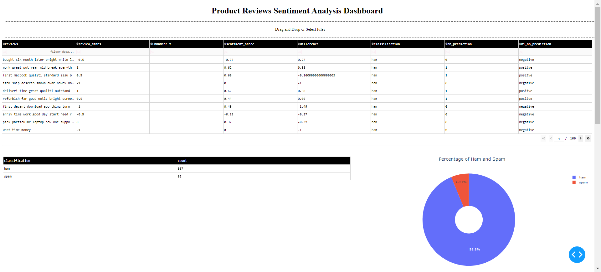
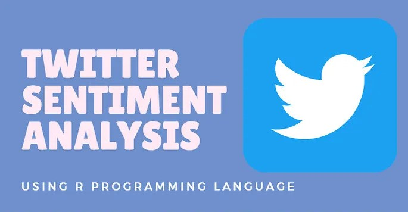
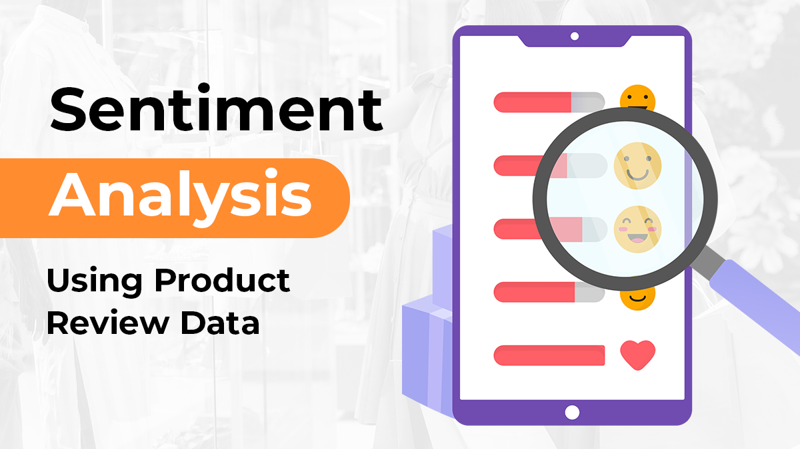

As a data scientist, I have the expertise to analyze vast amounts of data and transform it into valuable insights. By applying advanced techniques and algorithms, I uncover patterns, trends, and relationships within the data that can drive informed decision-making and solve complex problems. With my skills in data analysis, statistical modeling, and machine learning, I have the ability to extract actionable insights that can lead to impactful solutions and drive business growth.
July 5, 2023
Sentiment Analysis on Product Reviews Dashboard

The "Sentiment Analysis on Product Reviews Dashboard" provides visualizations of spam and ham reviews, sentiment scores, and the actual product reviews. It helps users understand the sentiment distribution, identify potential spam, and gain insights into customer satisfaction. Click this link to download sample reviews.
May 31, 2023
Bank Customer Churn Prediction using Gradient Boosting

The Bank Customer Churn Prediction project using Gradient Boosting aims to predict customer churn in a bank. It involves three stages: data preparation, exploratory data analysis (EDA), and predictive modeling. In data preparation, libraries and datasets are imported. EDA includes descriptive statistics, correlation analysis, data visualization, and churn analysis. Predictive modeling involves data preprocessing and training a Gradient Boosting model. The project provides insights into customer churn and builds a reliable predictive model.
July 5, 2023
Amazon Web Scraping using Selenium
To perform web scraping on Amazon using Selenium, we leverage the power of Selenium automation library in Python. By utilizing Selenium, we can interact with the Amazon website, extract relevant data, and automate various tasks. With Selenium, we can simulate user actions such as clicking, scrolling, and inputting data, allowing us to navigate through Amazon's web pages and retrieve desired information. This data can include product details, prices, customer reviews, ratings, and more. By harnessing the capabilities of Selenium, we can efficiently gather data from Amazon, enabling us to analyze trends, monitor prices, conduct market research, and make informed business decisions
May 14, 2020
Twitter Sentiment Analysis with R

"Twitter Sentiment Analysis with R" is a project that focuses on analyzing sentiments expressed in tweets using the R programming language. By leveraging the power of R and its diverse libraries, this project enables the extraction, cleaning, and processing of Twitter data to uncover valuable insights. Through sentiment analysis techniques, such as text mining and machine learning algorithms, the project aims to classify tweets as positive, negative, or neutral, providing a comprehensive understanding of public opinion on various topics or brands. By utilizing R's rich ecosystem of packages and functions, this project empowers researchers, marketers, and decision-makers to gain valuable insights from the vast pool of Twitter data, enabling them to make data-driven decisions and monitor online sentiment effectively.
July 5 2023
Sentiment Analysis on Product Reviews Using Multinomial Naive Bayes Algorithm

My undergraduate thesis titled "Sentiment Analysis on Product Reviews Using Multinomial Naive Bayes Algorithm" focused on developing a sentiment analysis model for analyzing product reviews. The research involved data collection, preprocessing, and feature extraction from a corpus of reviews. I utilized the Multinomial Naive Bayes algorithm, a popular machine learning technique for text classification, to train a model that could classify reviews into positive, negative, or neutral sentiments. The thesis demonstrated the effectiveness of this algorithm in accurately analyzing customer sentiments expressed in product reviews, contributing valuable insights to the field of sentiment analysis
June 9, 2022
Exploratory Analysis of COVID-19 Cases in the Philippines

This is an exploratory analysis of COVID-19 cases in the Philippines, aiming to uncover insights and patterns in the data. The analysis focuses on the time period from January 1, 2020, to May 15, 2020, and involves converting the date of announcement into a datetime format and generating a line plot to visualize the trends in the number of cases reported over time. This analysis offers valuable information to understand the progression and impact of COVID-19 in the Philippines during the specified period.